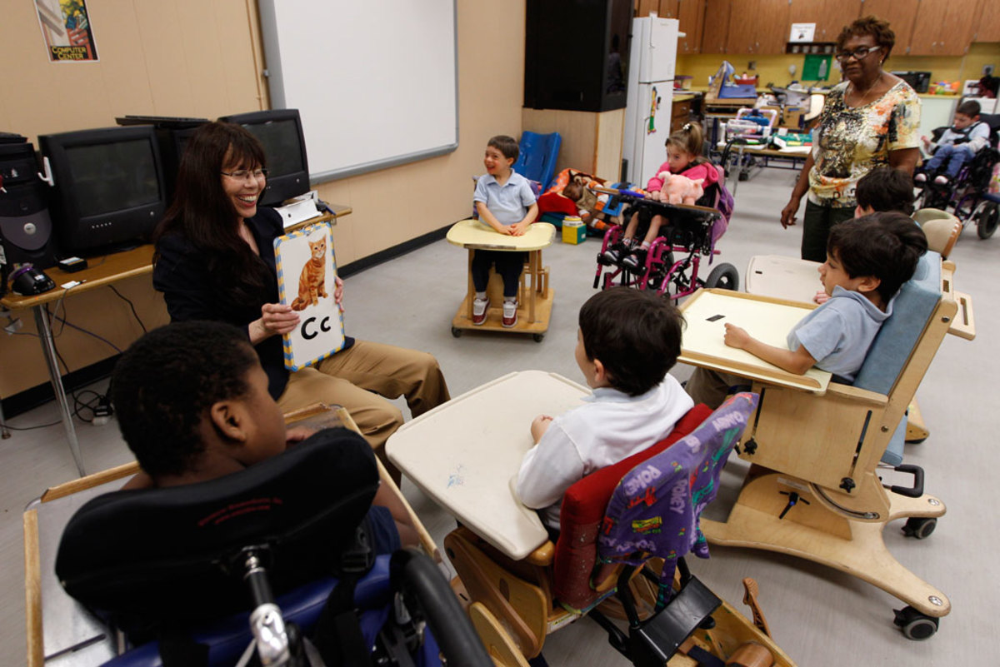

Education Specializations
Early Childhood Education
Focuses on foundational learning for children aged 0–8, emphasizing play-based and developmental approaches.
Career Paths: Preschool teacher, childcare coordinator, early learning specialist.
Key Subjects & Entry Requirements
- English, Life Orientation, Psychology
- Minimum APS and teaching aptitude
- Strong communication and empathy

Primary Education
Prepares educators to teach core subjects to learners in grades 1–7, focusing on literacy, numeracy, and holistic development.
Career Paths: Primary school teacher, curriculum planner, education facilitator.
Key Subjects & Entry Requirements
- English, Mathematics, Life Orientation
- Minimum APS and teaching aptitude
- Strong communication and empathy

Special Needs Education
Equips teachers to support learners with physical, emotional, or cognitive challenges through inclusive strategies.
Career Paths: Special education teacher, inclusion coordinator, learning support specialist.
Key Subjects & Entry Requirements
- English, Life Orientation, Psychology
- Minimum APS and teaching aptitude
- Strong communication and empathy